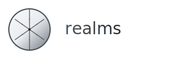
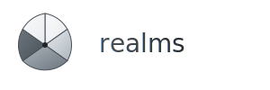
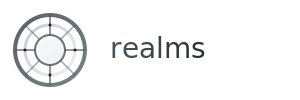

Realms Circular Logo Concepts
Exploring circular designs that capture the essence of "realms" - organizing societies (human, robots, hybrids) within a finite world. The circle represents unity and boundaries, while divisions show different realms and organizational structures.
Intersecting Divisions
A circle with intersecting lines creating multiple sectors, representing how different realms interact and overlap within the finite world.

- Symbolism: Interconnected realms with central coordination
- Visual: Clean intersecting lines with subtle intersection points
- Scalability: Works well at all sizes
- Meaning: Unity through organized division
Segmented Realms
A circle divided into distinct segments with gradual color transitions, representing different types of societies with their own characteristics.

- Symbolism: Distinct but connected realms
- Visual: Pie-chart style with gradient transitions
- Scalability: Good detail retention when scaled
- Meaning: Diversity within unity
Orbital Structure
Concentric rings with radial divisions, representing hierarchical organization from core governance to outer realms, like orbital layers of society.

- Symbolism: Hierarchical organization with central core
- Visual: Concentric rings with radial sectors
- Scalability: Complex but maintains structure
- Meaning: Layered governance and society organization
Concept Analysis
Current Bars Logo
- Abstract geometric shapes
- No clear conceptual connection to "realms"
- Professional but generic
- Good scalability
VS
Circular Concepts
- Direct conceptual meaning
- Represents finite world + divisions
- Unique and memorable
- Tells the story of the platform
Why Circular Works Better:
- Conceptual Clarity: Immediately communicates the idea of realms within a bounded world
- Symbolic Richness: Circle = unity/completeness, divisions = different societies
- Storytelling: Visually explains what the platform does
- Memorable: More distinctive than generic geometric bars
- Scalable: Works from favicon to billboard
- Flexible: Can adapt divisions for different contexts (3, 4, 6, 8 segments)
Recommendation
The Intersecting Divisions concept (V1) provides the best balance of conceptual clarity, visual appeal, and practical usability. It clearly represents the core idea of organizing different realms within a finite world while maintaining the professional, institutional aesthetic you're looking for.